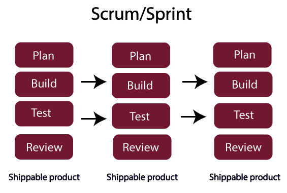
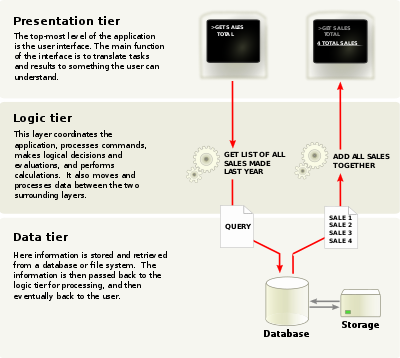
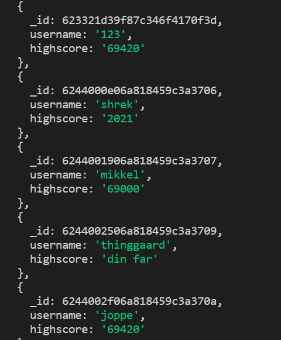

Informatik Noter
Der er fem regler for hvorfor at hjemmesidder skal være pæne:
1.Contrast of size
Juxtaposition:
ting som er abstrakte og som ikke normalt passer sammen men det gør billede flot og intrasant.
2. Repetition:
tingene skal se ens ud og der skal være en rødtråd
3. Alignment:
tingene skal stå lige så det ser ordentligt ud, det giver en balance
4. Proximity
5. White space:
kan bruges til at få tingene til at se godt ud fokusere på de rigtige ting.
Det kan virke klaus uden white space
javascript er til at lave dynamiske elementer i html og css
javascript er fx til at lave knapper og andre bruger derteminerde inputs, som fx når man kører mussen over en knap eller andet
funkition kan man bruge java til at ændre knappen eller måske en lille funktion.
Assess: vi skal finde problemet og lave noget til at løse det
Design: Man skal komme på ideer til at løse krav, behov og problemer til produktet
Build: Man laver prototyper af de her design ideer.
Det gør man om og om indtil man har det færdige resultat
Brainstorm af case:
Man kan se hvad der er i kantinen
Live opdatering af kantinemad
Nedtælling til ting (weekend, frikvarter osv.)
Nedtælling af opgaver og hvornår man får de næste for
Hjemmeside og ting du kan lave med din kæreste, i skole, med fam, med venner osv.
Lærer quotes
vi havde tænkt os at finde en ide hvor at vi både synes det var fedt at lave men også hvor at vi fysik stadig kunne finde ud af at lave det.
Let: er en variable
Const: er en konstant
Dette er begreber som man skal bruge når man skal opstille værdier og andre ting i forhold til JS
man kan bruge if statements til at eksekvere, en blok
af kode. dette er praktisk for fx, hvis man skal
finde ud af om noget er ture eller false.
funktioner kan man bruge som en funktion sjovt, nok,
hvor man selv skal diffinere den og anvende den
i sin kode.
arryas er en samling af viriable
som man kan samle meget information samme sted.
istedet for
let bmw
let audi
let fiat
kan man skrive:
const arrysnavn ["bmw", "audi", "fait"]
derefter kan man refare til dem som const arrysnavn = [0], som så ville være bmw.
while (condition){
// blok der skal eksekvret
}
fx
While (counter <10) {
text += "
this number is" + constant;
constat}
og så tæller den fra 1-10
man kan bruge loops til at gentage logik
og gennemkigge arrays.
hvis man skriver aleret: aleret("game over");
så kan man smide det ind i en if og fx skrive
gamestate=gameover, og så ville den poppe op
hver gang gamestatet er gameover
confirm, kan det samme hvor man kan vælge og
acceptere eller ikke acceptere, fx om spillet
skal forsætte eller ej.
man kan bruge promt, til at få et input fra brugen, som man senere kan refere til.
Vi har også lært om scrum, som er en model man kan bruge når man har et
projekt.
scrum er en metode til at håndterer et projekt på. Man laver små "sprints" som
er et lille projekt. et sprint består af en plan for sprintet, efter bygger man
funktion, hvorefter man tester det.
på den måde laver man mange små sprints i løbet af et projekt.
man holder også møder efter hvert sprint, for at opsumere og evaluere, på hvordan
det er gået, og hvad der godt eller skidt. (review fase)

Tre lags arkitekturen:
Det er bygget op i tre dele:
Presentation tier: der hvor vi interager med serven igennem, der fx forskellige knapper.
Logic tier: tager beskeder fra Presentation tier og omlaver dem til data
Data tier: her er alt data og bliver lagret på en server.

Informatik Projekter
Case:
At lave en hjemmeside om ting man kan lave med fx sin mor, far, kæreste, når man keder sig i skolen osv.
Hjemmesiden skal hedde What2do
Persona: Peter er 17 år gammel. Han har en kæreste. Han keder sig meget hver dag og vil gerne vide hvad han kan bruge sin tid på. Og hvad han kan lave med sine venner, kæreste og familie.
mikkel og jeg er gået igang med at tegne nogle skeches i paint af hvordan den kan se ud.

Vi har en farve som vi bruger på vores hjemmeside det er #0C2EA3
vi skulle i denne opgave lave en ektra udvidelse til det flappybird spil vi
blev introduceret til
vi valgte og lave en version, hvor vi havde en spunk og vores "fugl" skulle blive til en ny
karakter vi selv valgte.
vi har brugt den teknitk vi lærte i timen, med at fx spawne et ny item, vi lavede
derefter en spunk, hvor at når man kollidere med spunken. Bliver man til Hassbulla.
hvis man trykker op i navigations baren på flap, kan man prøve vores modificeret spil,
med spunk og Hassbulla.
vi skulle lave et projekt hvor vi brugte en demo side og mongodb, til
en ting vi selv valgte. Vi vil gerne have lavet et spil, hvor man kunne indtaste
sit username, hvorefter man fik sin score gemt i databasen.
vi genbrugte det oprindlige flappybird spil, og koplet den sammen med databasen.
vi brugte også nogle linjer kode fra fullstackdemo-master, til at kople mongodb
og flappybird scorer op. Dette gjorde vi ved commanden "promt". hvorefter man skal
skrive sit brugernavn, som scoren bliver gemt i. Efterfølgende kommer scorerene ind
på mongodb.
hvis man trykker på "database spil" oppe i navigations baren, kan man se vores
promt alert, hvor den spørg om ens username.
her kan man se nogle de forskellige score vi har lavet:

man kan se at alle scores har et id, username og en score.